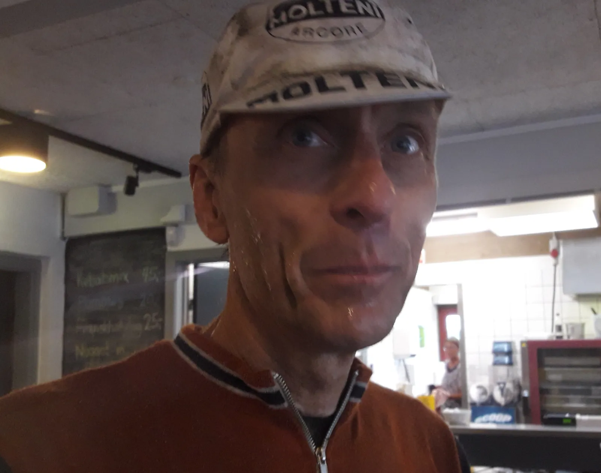

Tour de Trekanten: Regn, punkteringer og topplaceringer

Næsten restitueret efter Mortirolo og Stelvio fandt Kaptajn Niels Bjørnsteen, Løjtnant Kasper Sørensen tid i løbskalenderen til at køre det lokale Tour de Trekanten. Grimpeur Eigil Leegaard var med som forstærkning. Det blev til topplaceringer til Squadra Molteni.
– Det var egentlig planen, at vi skulle cykle de 15 km ud til løbet. Men efter en kop morgen-espresso hos Kaptajnen, skar jeg igennem. Min lorte YR-vejr-app sagde, at der var tørvejr og kun let skyet. Udenfor pissede det ned. Så vi kørte i bil derud, fortæller Løjtnant Sørensen.
Det pissede stadig ned, da starten gik. (Det gjorde for øvrigt under hele løbet). Der kom hurtigt godt fart over det 100 mand store felt. Og nok lidt for meget fart! For efter godt 5 km styrter de to forreste i en venstrekurve – og ender efter et par saltomortaler ude i en mark. Kaptajn Bjørnsteen lå lige bag de to, men nåede at undvige.
– Heldigvis virker mine gamle Campagnolo Nouvo Record bremser så dårligt i regnvejr, at det er umuligt at blokere hjulene, og dermed skride ud. Jeg huggede bremserne i, men der skete ikke det store. Det var dog nok til, at jeg kunne undvige de to ryttere, der var på vej sidelæns ud i rabatten. Campagnolo Nouvo Record bremser har faktisk indbygget ABS i regnvejr, lyder det fra Kaptajnen.
Efter 22 km kom løbets to alvorlige bakker. Både Kasper, Niels og Eigil sad helt fremme i feltet. Et par af de lette ryttere satte farten op. Kasper og Niels gik med. På bakke nummer to må Niels slippe lidt. Kasper er flyvende og kører væk med to. 3-4 rytter kommer forbi Niels – og med 100% vilje og 98% mælkesyre, får Niels hægtet sig på.
Da det flader ud efter dobbeltbakkerne, er der kun 12 ryttere tilbage.
Lidt længere nede kæmper Eigil som en gal for at komme op. For sent for han følgeskab af en gruppe. Frontgruppen er kørt. Kort efter punkterer Eigil.


– Jeg får smidt en ny slange i. Men 10-15 km senere punkterer jeg endnu engang. Efter endnu et slangeskifte er jeg kold og rasende. Jeg giver den en spand kul og kører stort set resten af løbet alene, fortæller Eigil.
Fremme i førergruppen ligger Kaptajnen og Løjtnanten og venter på det rigtige moment for et angreb. En stykke forude ligger en enlig rytter. Han er ved at blive hentet. Kasper tager et par lange hårde føringer. På en lille bakke med godt 10 km til mål angriber Kaptajnen.
– Feltet går lidt i stå efter Kaspers forceringer. Jeg ser den lille bakke. Jeg rejser mig og træder til. I det samme ryger kæden ud i 53-14 – så jeg kommer hurtigt væk fra feltet, lyder det fra Niels Bjørnsteen.
Et par stærke unge ryttere får senere kørt Kaptajnen ind. Kasper ligge med på hjul, men der er ikke overskud på kontoen til et kontrahug.
I finalen bliver der kørt afsindigt stærkt. Men både Niels og Kasper bider tænderne sammen og får presset sig frem til en henholdsvis 5. og 6. plads.